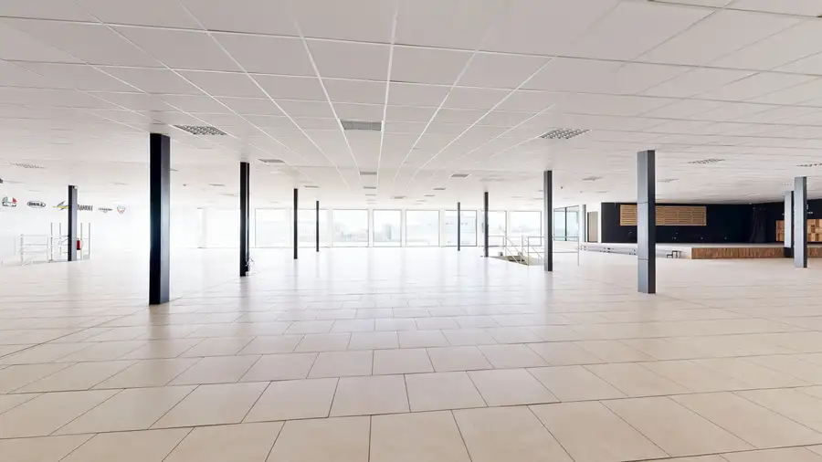
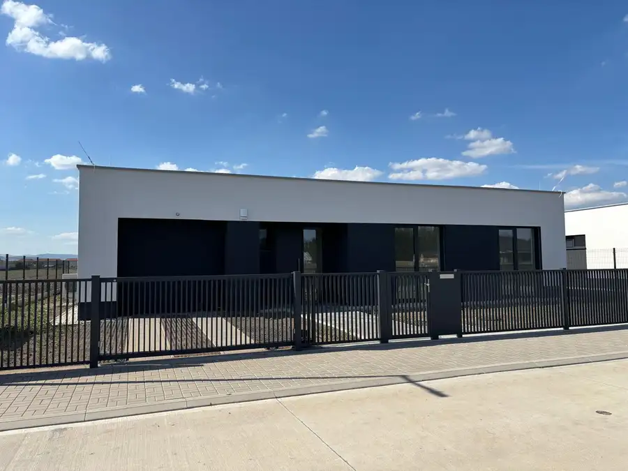
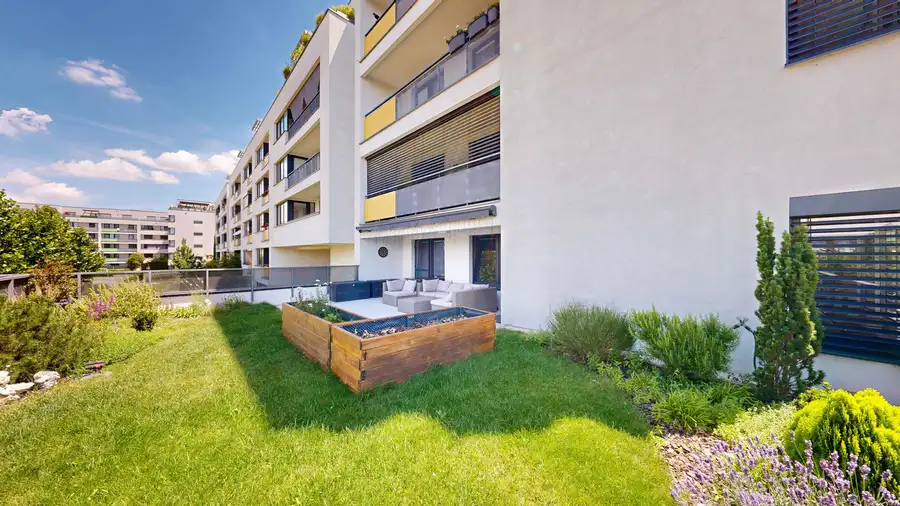
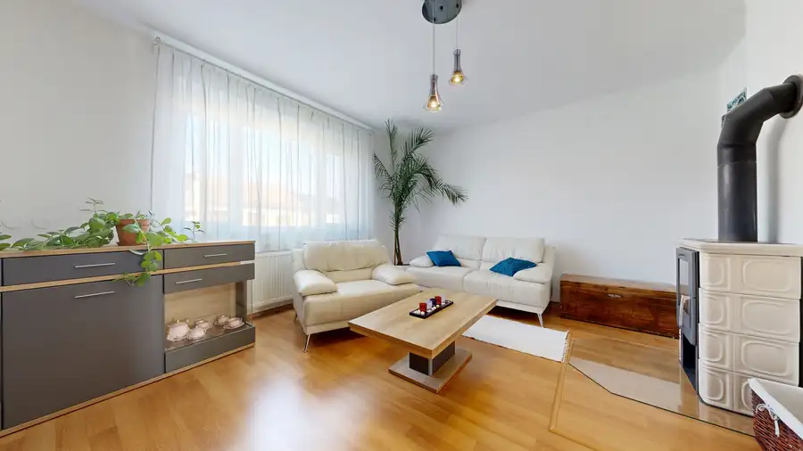
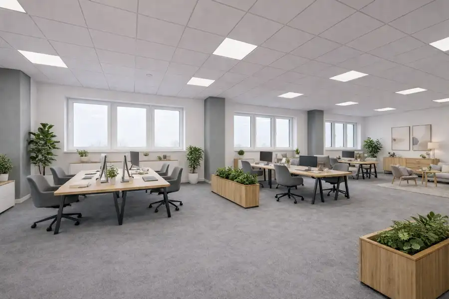
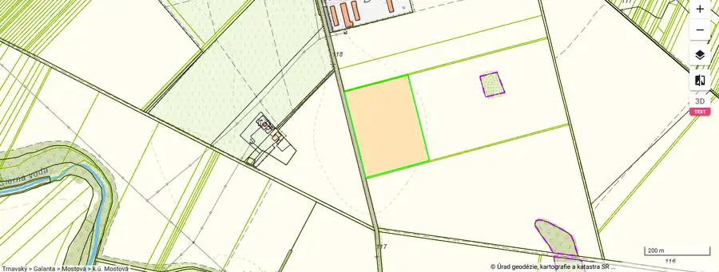
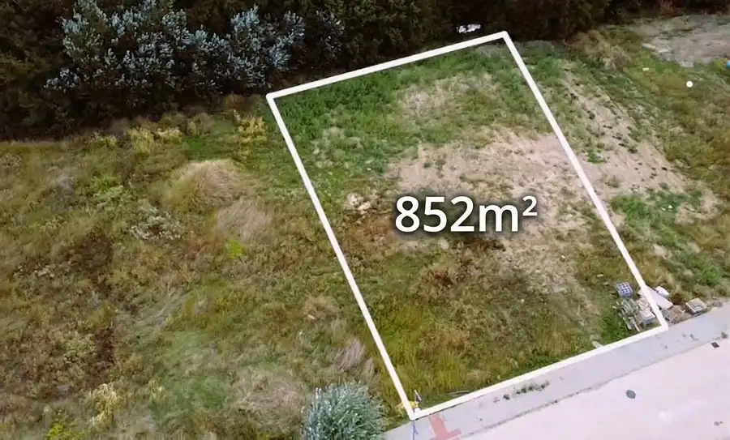
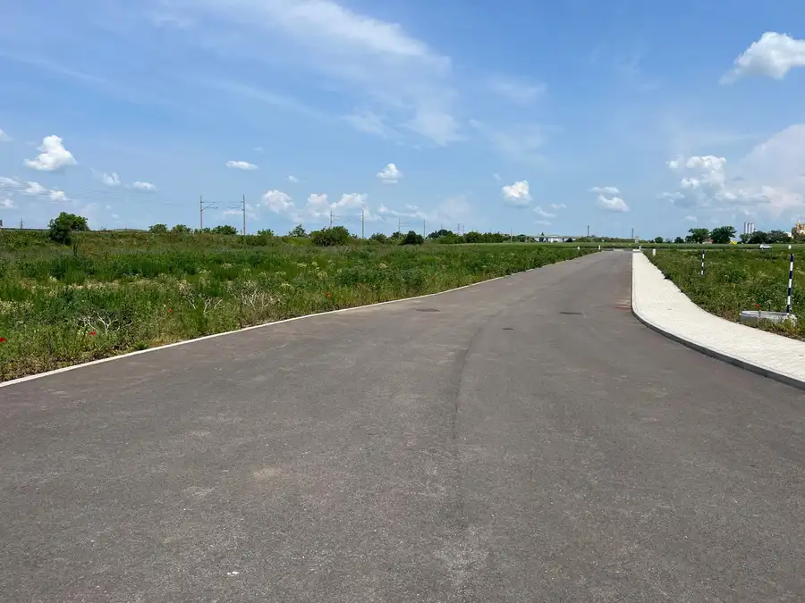

Aktuálna ponuka
12 nehnuteľností, predovšetkým rodinné domy, komerčné priestory, pozemky. Každá má vlastnú stránku s fotkami, popisom a mapou.
Prezrieť ponukuZuzana BenkovskáRealitná maklérka
Realitná maklérka · CASMAR REALITY s.r.o.
Predaj a prenájom nehnuteľností · Trnava, Biely Kostol, Trstín


 BytNové10
250 000 €PREDAJ | 3-izbový byt priamo v srdci Trnavy – skvelý potenciál
Trnava
3-izbový94.98 m²
CASMAR realitná kancelária exkluzívne ponúka na predaj priestranný 3-izbový byt s balkónom priamo v centre Trnavy.Ak hľadáte nehnuteľnosť, pri ktorej…
Dom10
549 000 €PREDAJ | Veľkorysý rodinný dom v Trnave s 3 bytovými jednotkami – bývanie aj investícia
Trnava
321 m²
CASMAR realitná kancelária exkluzívne ponúka na predaj nadštandardný priestranný dvojpodlažný rodinný dom situovaný v pokojnej a vyhľadávanej…
Komerčné priestory10
2 690 000 €🏭 Na predaj priemyselná hala v Trnave – výroba / sklad / logistika
Trnava
3877 m²
CASMAR realitná kancelária vám exkluzívne ponúka na predaj modernizovanú výrobnú a skladovú halu v strategickej lokalite mesta Trnava.Nehnuteľnosť je…
BytNové10
250 000 €PREDAJ | 3-izbový byt priamo v srdci Trnavy – skvelý potenciál
Trnava
3-izbový94.98 m²
CASMAR realitná kancelária exkluzívne ponúka na predaj priestranný 3-izbový byt s balkónom priamo v centre Trnavy.Ak hľadáte nehnuteľnosť, pri ktorej…
Dom10
549 000 €PREDAJ | Veľkorysý rodinný dom v Trnave s 3 bytovými jednotkami – bývanie aj investícia
Trnava
321 m²
CASMAR realitná kancelária exkluzívne ponúka na predaj nadštandardný priestranný dvojpodlažný rodinný dom situovaný v pokojnej a vyhľadávanej…
Komerčné priestory10
2 690 000 €🏭 Na predaj priemyselná hala v Trnave – výroba / sklad / logistika
Trnava
3877 m²
CASMAR realitná kancelária vám exkluzívne ponúka na predaj modernizovanú výrobnú a skladovú halu v strategickej lokalite mesta Trnava.Nehnuteľnosť je…
 Dom10
185 000 €🏡 Vidiecky rodinný dom s veľkou záhradou a vínnou pivničkou – Trstín
Trstín
130 m²
CASMAR RK exkluzívne ponúka na predaj poschodový rodinný dom v obci Trstín, ktorý zaujme svojím vidieckym štýlom, veľkorysým priestorom a príjemnou…
Dom10
185 000 €🏡 Vidiecky rodinný dom s veľkou záhradou a vínnou pivničkou – Trstín
Trstín
130 m²
CASMAR RK exkluzívne ponúka na predaj poschodový rodinný dom v obci Trstín, ktorý zaujme svojím vidieckym štýlom, veľkorysým priestorom a príjemnou…

Dom10 459 000 €Nové rodinné domy v Bielom Kostole – len na skok od Trnavy! Biely Kostol 160 m² Realitná kancelária CASMAR vám ponúka moderný a štýlový developerský projekt pozostávajúci z 10 samostatných rodinných domov na rovinatých pozemkoch…
Byt10 325 000 €🌿 Exkluzívne na predaj | Nadštandardný 3-izbový byt s veľkou terasou v Arborii, Trnava Trnava 3-izbový77.72 m² CASMAR realitná kancelária exkluzívne ponúka na predaj moderný a priestranný 3-izbový byt v obľúbenom rezidenčnom projekte Arboria Trnava. Byt vyniká…
Dom10 195 000 €Predaj | zrekonštruovaný rodinný dom | Dolný Lopašov Dolný Lopašov 190 m² CASMAR realitná kancelária exkluzívne ponúka na predaj priestranný rodinný dom v obci Dolný Lopašov, okres Piešťany. Nehnuteľnosť sa nachádza na…
Komerčné priestoryNové10 Cena dohodouNa prenájom | Kancelárske priestory 390 m² – Zavarská ulica, Trnava Trnava 390 m² CASMAR realitná kancelária exkluzívne ponúka na prenájom priestranné a funkčne riešené kancelárske priestory s celkovou výmerou 390 m², vhodné pre…
PozemokNové2 Cena dohodouCASMAR RK – Na predaj pozemok s právoplatným ÚR na výstavbu priemyselného objekt Mostová 53607 m² CASMAR REALITY ponúka na predaj rozsiahly pozemok s výmerou 53 607 m², vhodný na realizáciu priemyselného objektu, logistického skladu alebo…Tomuto výberu zatiaľ nezodpovedá žiadna ponuka. Napíšte mi, čo hľadáte.
Volám sa Zuzana Benkovská. Som realitná maklérka kancelárie CASMAR REALITY s.r.o. a pôsobím predovšetkým v lokalitách Trnava, Biely Kostol, Trstín a Dolný Lopašov (Trnavský kraj).

12 nehnuteľností, predovšetkým rodinné domy, komerčné priestory, pozemky. Každá má vlastnú stránku s fotkami, popisom a mapou.
Prezrieť ponuku
Trnava, Biely Kostol, Trstín, Dolný Lopašov, Mostová a okolie. Ponuku si môžete prezrieť podľa lokality.
Nehnuteľnosti v lokalite
Odhad trhovej ceny, príprava prezentácie, obhliadky, zmluvy a odovzdanie nehnuteľnosti.
Dohodnúť stretnutieKaždý špendlík je jedna nehnuteľnosť z mojej ponuky. Kliknite a pozrite sa.
© prispievatelia OpenStreetMap
Na čo sa pýtate najčastejšie, skôr než sa stretneme.
Odhad trhovej ceny vychádza z aktuálnych ponúk a predajov v lokalite, nie z cenníkových tabuliek. Podmienky Vám poviem pri prvom telefonáte.
Najprv obhliadka a odhad ceny, potom príprava prezentácie (fotografie, popis, inzercia), obhliadky so záujemcami, rezervačná zmluva, kúpna zmluva, návrh na vklad do katastra a odovzdanie nehnuteľnosti. O každom kroku viete vopred.
Najrýchlejšie cez WhatsApp alebo telefón. Termín stretnutia alebo obhliadky dohodneme podľa Vás.